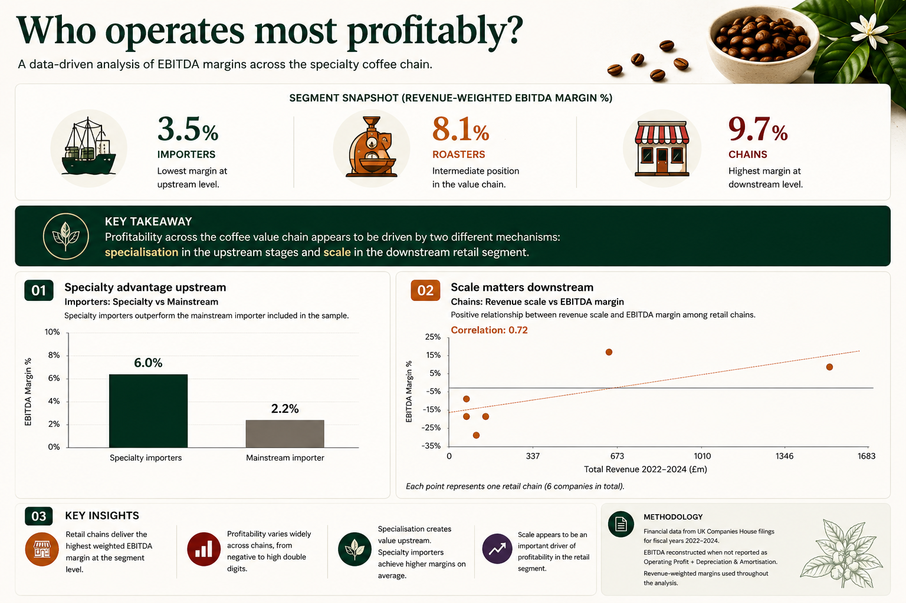
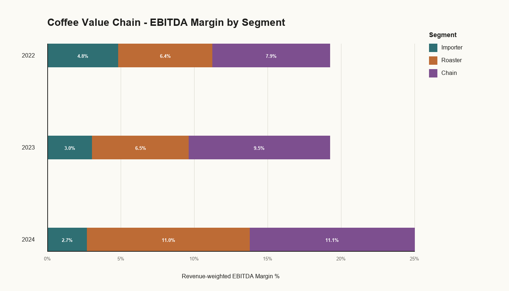
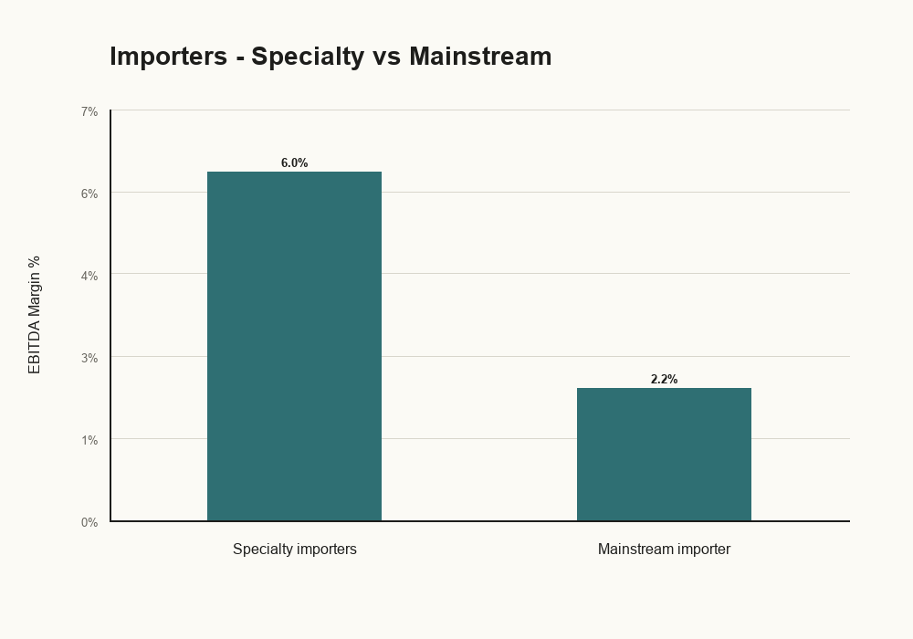
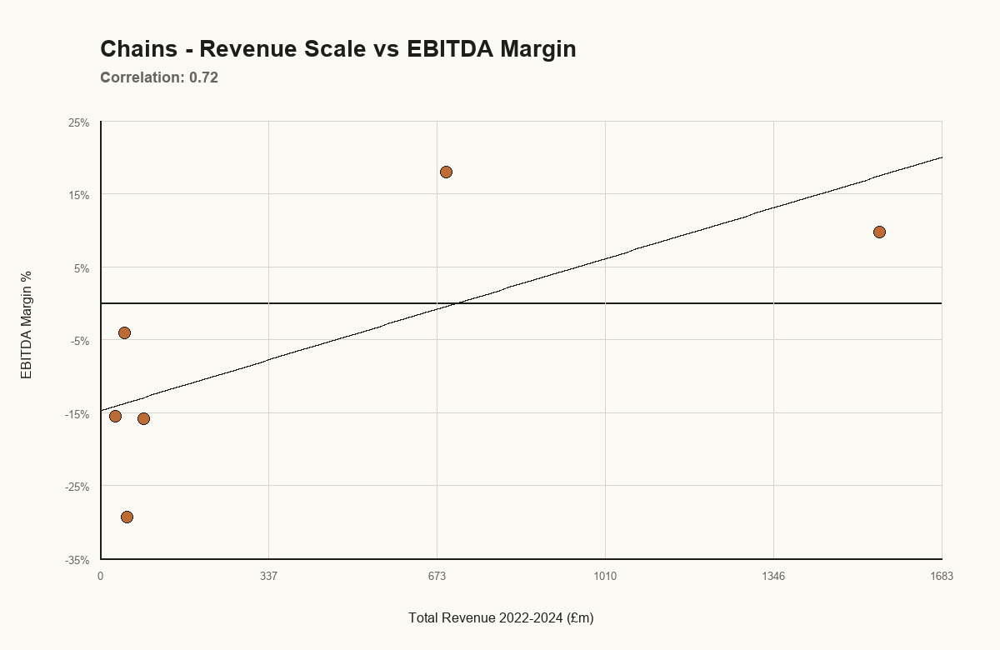

Research Overview
Detailed analysis of EBITDA margins across the coffee value chain
1. Project objective
This study aims to identify which segment of the coffee value chain converts revenue into EBITDA most efficiently.
The analysis focuses on three segments of the industry: importers, roasters and retail coffee chains. EBITDA margin is used as the primary performance metric to assess each segment’s ability to translate commercial activity into operating profitability.
Beyond the core research question, two additional insights emerged from the analysis. First, the evidence suggests that specialisation may create an economic advantage across the coffee value chain, particularly within the upstream stages covered by this study. This effect is most visible among importers, where specialty operators consistently outperform the mainstream benchmark included in the sample. Coffee producers were not included due to the limited availability of comparable public financial information.
Second, the findings indicate that scale plays an important role in retail profitability. Larger chains generally achieve stronger margins, suggesting that operating scale may be a key driver of sustainable earnings in consumer-facing coffee businesses.
2. Methodology
The sample was built using publicly available financial information obtained from UK Companies House.
The analysis covers fiscal years 2022–2024. Fiscal years 2020 and 2021 were excluded due to the exceptional impact of COVID19 on both the coffee and hospitality industries.
For each company, Revenue, Operating profit, Depreciation & Amortisation and EBITDA were collected. Where EBITDA was not explicitly reported, it was reconstructed as:
EBITDA = Operating profit + Depreciation & Amortisation
To ensure that larger businesses exerted an appropriate influence on segment-level results, revenue-weighted EBITDA margins were used throughout the analysis.
Where available and considered more representative of the underlying economic activity, consolidated financial statements were used. This approach was intended to capture the performance of the full operating group rather than individual legal entities, improving comparability across companies with different corporate structures.
Not all companies report on a calendar-year basis. To maintain consistency, each reporting period was assigned to the calendar year containing the majority of the months covered by the accounts.
3. Variables used
Financial variables
- Revenue
- Operating profit
- Depreciation & Amortisation
- EBITDA
- EBITDA margin (%)
Analytical variables
- Segment (Importer, Roaster, Retail chain)
- Years (2022–2024)
Technology stack
- Python
- Pandas
- NumPy
- PIL/Pillow
- Codex for code generation, debugging and optimisation
- ChatGPT for research support and methodological validation
Data source
- UK Companies House
4. Explanation of the charts
Chart 1 – Coffee segments profitability
Compares revenue-weighted EBITDA margins across importers, roasters and retail chains.

Chart 2 – Specialty advantage upstream
Compares the profitability of specialty coffee importers against the mainstream benchmark included in the sample.

Chart 3 – Scale matters downstream
Explores the relationship between company size and EBITDA margin within the retail chain segment.

5. Limitations
The sample remains relatively small and is not intended to represent the entire coffee industry.
The importer comparison includes only one mainstream operator and should therefore be interpreted as indicative rather than conclusive.
Differences in scale, business model and growth stage may also influence the results.
A reconciliation check was performed between reported EBITDA and a mechanical EBITDA proxy calculated as operating profit plus depreciation and amortisation. In some cases, material differences were identified, reflecting company-specific adjustments or classification effects. Therefore, EBITDA figures should be interpreted as a management-performance proxy rather than a fully standardised statutory metric.
Finally, some companies operate under non-calendar fiscal years, creating minor timing differences across observations.
6. Conclusions
This study examined how profitability is distributed across the coffee value chain and which business models are most effective at converting revenue into operating earnings.
At segment level, retail chains show the highest revenue-weighted EBITDA margins, suggesting that businesses positioned closest to the consumer may be well placed to capture value through branding, convenience, customer experience and product diversification.
However, retail exposure alone does not guarantee profitability. Margins vary widely across operators, with established chains generating stronger EBITDA margins while several growth-oriented businesses remain EBITDA negative during the period analysed. This suggests that scale may be an important driver of profitability in the retail segment, enabling operators to leverage fixed costs, improve purchasing power and convert pricing strength into sustainable earnings.
A second key insight emerges from the importing segment. Specialty coffee importers consistently outperform the mainstream benchmark included in the sample. Although coffee producers were not included due to the lack of comparable public financial information, the results suggest that the economic benefits associated with specialisation are particularly visible in the upstream stages of the value chain. Quality differentiation, traceability and direct sourcing relationships appear to create meaningful economic value reflected in superior margins.
Roasters occupy an intermediate position between importers and retailers. While they capture part of the value generated through product transformation and brand development, their profitability remains below that achieved by the largest retail operators.
Overall, the findings suggest that profitability within the coffee industry is driven by two distinct sources of competitive advantage: specialisation in the upstream stages of the value chain and scale in the downstream retail segment. Together, these mechanisms help explain how value is created and captured across the modern coffee industry.
This analysis is based solely on publicly available UK Companies House filings and company-published reports. Figures have been standardized for comparison and may differ from company-defined KPIs. This is not investment advice and should not be read as a judgement on company quality, management, or future performance.